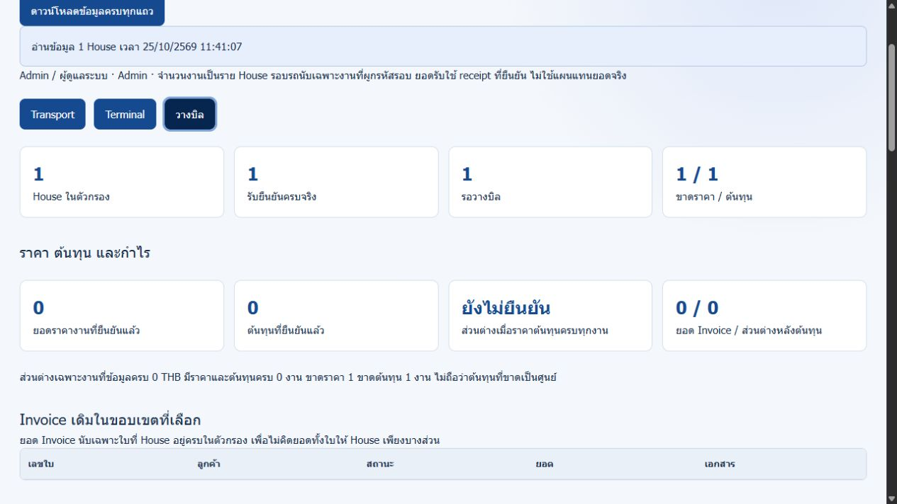
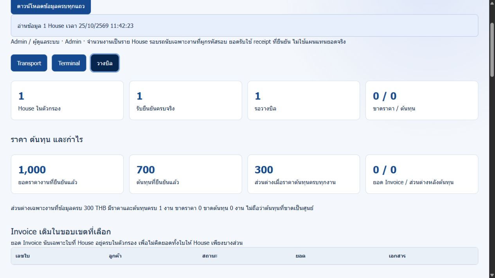
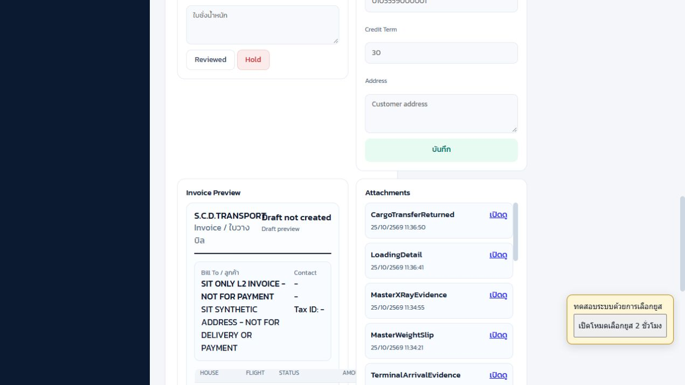
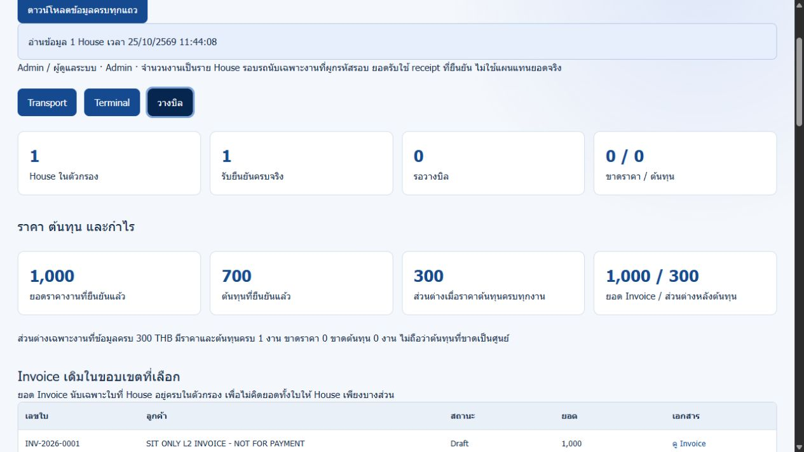
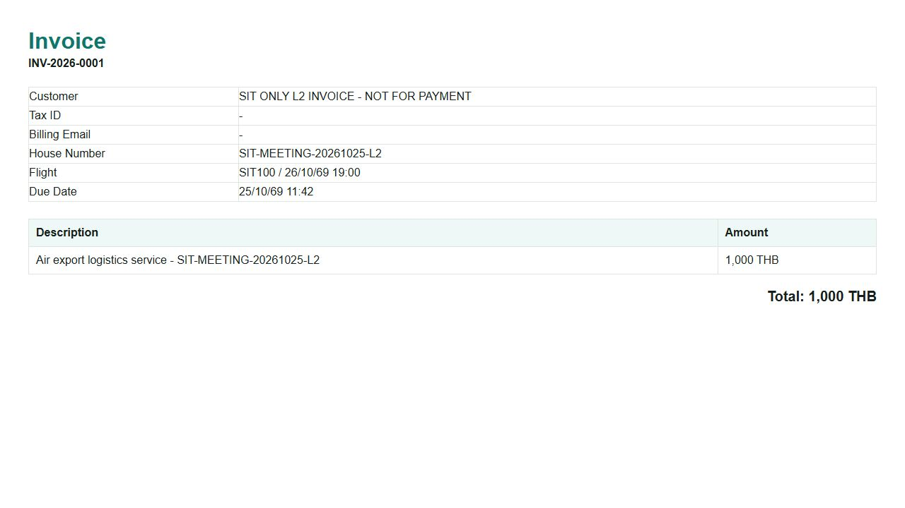
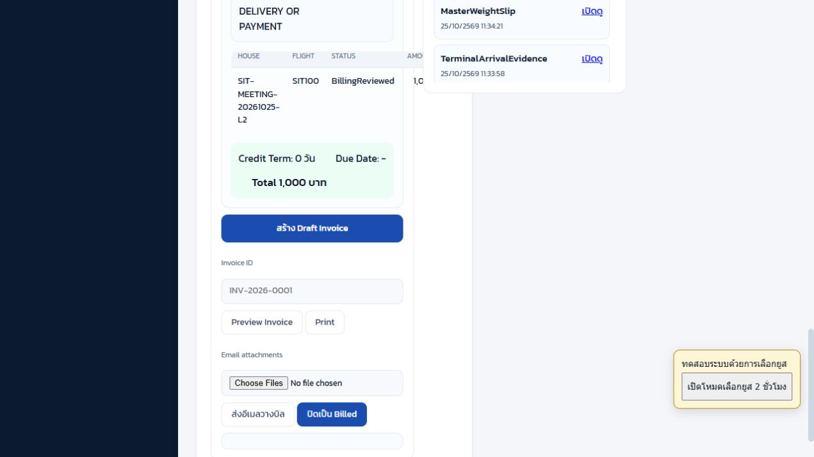
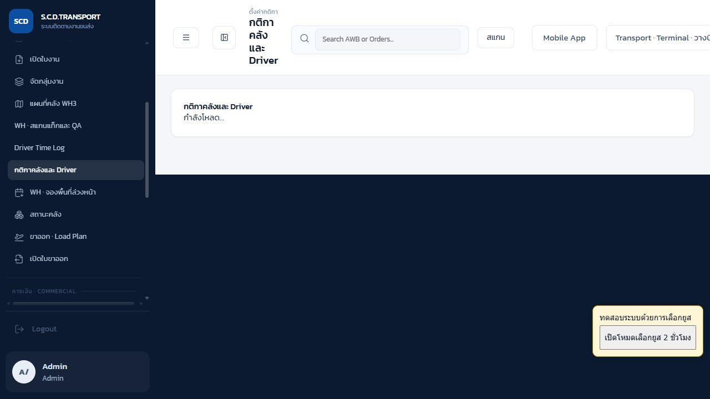

อัปเดต: แก้ที่อยู่ Invoice แล้วDeploy 166af83 และทดสอบบิลเดิม INV-2026-0001 ผ่าน ที่อยู่ตรง Preview เลข/ยอด/วันที่/สถานะเดิมไม่เปลี่ยน
เปิดผลหลังแก้และภาพจริง ผล FAIL ด้านล่างเป็นประวัติก่อนแก้
SIT L2: พร้อมวางบิล → ตรวจเอกสาร → สร้าง Invoice
25 ตุลาคม 2026 • Asia/Bangkok • Production SCD Transport • รุ่น 44fa954 ไม่มีการ deploy โค้ดใหม่ในรอบทดสอบนี้
สร้าง Invoice Draft INV-2026-0001 ได้จริง
House SIT-MEETING-20261025-L2 ยอดทดสอบ 1,000 บาท สถานะงาน InvoiceDrafted / สถานะเอกสาร Draft เปิดเอกสารจาก storage ได้ มีเพียงหนึ่งใบในขอบเขตนี้ กดซ้ำถูกบล็อก ไม่ส่งอีเมลและไม่ปิดเป็น Billed
พบ 1 จุดไม่ผ่าน: ที่อยู่ในเอกสารไม่ตรงกับ Preview
หน้า Preview แสดง SIT SYNTHETIC ADDRESS - NOT FOR DELIVERY OR PAYMENT และข้อมูล Customer ถูกบันทึกครบ แต่ Invoice HTML ที่ระบบสร้างจริงไม่แสดงที่อยู่ลูกค้า ผลนี้ยังเป็น FAIL ไม่สรุปว่าทุกหัวข้อผ่าน ต้องเพิ่มที่อยู่ลงใน template แล้วทดสอบเทียบ Preview/เอกสารซ้ำ ในรอบนี้ยังไม่ได้แก้หรือ deploy ประเด็นนี้
1. แยกข้อมูลจริงของระบบกับข้อมูลจำลอง
- ผลระบบจริง: คำขอ HTTP, Invoice ID, สถานะ Draft/InvoiceDrafted, วันที่สร้าง, การตรวจสิทธิ์, การบล็อกสร้างซ้ำ, ตัวเอกสาร storage และภาพหน้าจอ
- ข้อมูลจำลองเฉพาะ SIT: House L2 เดิม ลูกค้าใหม่ SIT ONLY L2 INVOICE - NOT FOR PAYMENT ที่อยู่จำลอง ราคา 1,000 บาท ต้นทุนรวม 700 บาท และหลักฐานขนส่ง/คลัง/Terminal เดิมทั้งหมด ไม่ใช่รายได้หรือรายการเรียกเก็บลูกค้าจริง
- เลข Invoice: ระบบใช้ running Invoice ปกติสร้าง INV-2026-0001 ใน production เป็น Draft ทดสอบ มีคำว่า SIT ONLY / NOT FOR PAYMENT ที่ชื่อลูกค้า เก็บแยกด้วย House/Customer นี้ ไม่ลบเพื่อย้อนเลขและไม่รวมยอดไปเรียกเก็บเงินจริง
- ขอบเขตสิ้นสุด: ออกเอกสาร Draft พร้อมเปิดอ่าน ไม่ได้ทดสอบส่งอีเมล แจ้งลูกค้า ยืนยัน Billed รับชำระ ภาษี หรือ VAT เอกสารที่ได้เป็น HTML สำหรับเปิด/พิมพ์จากเบราว์เซอร์ แม้ฟิลด์ API จะชื่อ pdfUrl ไม่ใช่ไฟล์ PDF
2. ชุดทดสอบและยอดเงิน
| รายการ | ข้อมูล |
|---|
| House / Master / Flight | SIT-MEETING-20261025-L2 / SIT-MASTER-20261025-L2 / SIT100 คงเดิม |
| ก่อนทดสอบ | ReadyForBilling / Available ปิด Terminal แล้ว คืน Cargo Transfer แล้ว receipt 2 CTN ยังไม่มี Invoice |
| ลูกค้าออกบิล | SIT ONLY L2 INVOICE - NOT FOR PAYMENT • ID c_sit_only_l2_invoice_not_for_ เป็นลูกค้าทดสอบใหม่ที่ผูกเฉพาะ L2 เพื่อไม่แก้ข้อมูลลูกค้าเดิมที่ L1 ใช้ร่วม |
| Email / Tax ID / Credit | เว้นอีเมล เบอร์โทร และเลขภาษี ไม่ใส่ข้อมูลบุคคลจริง Credit term 0 วัน |
| ยอด / ต้นทุน / ส่วนต่าง | 1,000 / 700 / 300 บาท ทั้งหมดเป็นค่าจำลอง ต้นทุน 700 รวมเชื้อเพลิง 200 แล้ว ไม่บวกซ้ำเป็น 900 |
| สร้าง / ครบกำหนด | 25/10/2026 11:42:50 / 25/10/2026 11:42:50 น. ตาม credit 0 วัน เป็นวันที่ในสถานการณ์ SIT |
| ผลสุดท้าย | InvoiceDrafted / Draft / รถ Available / receipt ยังคง 2 CTN / ไม่มีการส่งอีเมล / ไม่เป็น Billed |
3. ผลทดสอบหลักและสิ่งที่ควรได้
| ทดสอบ | ผลที่ควรได้ | ผลจริง |
|---|
| คนขับตรวจเอกสารหรือสร้าง Invoice | 403 ไม่อนุญาต | ผ่าน |
| สร้าง Invoice ก่อน Reviewed รวม forceDraft | 409 ไม่ข้ามตรวจเอกสาร | ผ่าน |
| Transport แก้ราคา / ตั้งราคาติดลบ | 403 / 422 | ผ่าน |
| ตั้งราคาและต้นทุน SIT | 1000 / 700 ส่วนต่าง 300 ไม่ถือว่าข้อมูลที่ขาดเป็นศูนย์ | ผ่าน |
| ตรวจเอกสาร | Reviewed เมื่อเอกสาร 9 หัวข้อครบ | ผ่าน |
| ออก Invoice | Draft หนึ่งใบ House/Customer/ยอดถูกต้อง | ผ่าน |
| สร้างซ้ำ API และปุ่มเว็บ | 409 ไม่เพิ่ม Invoice | ผ่าน |
| แก้ราคาหลังมี Invoice | 409 ให้ตรวจบัญชีก่อน | ผ่าน |
| เปิดเอกสาร | HTTP 200 เลข Invoice House และยอดตรง | ผ่าน |
| ที่อยู่ในเอกสารตรง Preview | แสดงที่อยู่ลูกค้าที่บันทึก | ไม่ผ่าน — template ไม่แสดงที่อยู่ |
| เทียบงานอื่น/ทะเบียนเดิม/Geofencing | ไม่เปลี่ยนงานนอก L2 และไม่เปิด Geofencing | ผ่าน |
4. เอกสารที่ระบบตรวจครบก่อนออก Invoice
blockers ว่าง และ ready=true รวมหลักฐานจำลองจากรอบก่อน ไม่สร้างหลักฐานหน้างานใหม่แทนการรับส่งจริง
| เงื่อนไข | ผล |
|---|
| hasWeight | ผ่าน |
| hasTransfer | ผ่าน |
| hasLoading | ผ่าน |
| hasFieldEvidence | ผ่าน |
| hasPlanApproval | ผ่าน |
| hasWh3Dispatch | ผ่าน |
| hasCsEvidence | ผ่าน |
| hasWorkDate | ผ่าน |
| hasPlanVersion | ผ่าน |
5. วิธีทำตามบนหน้าจอ
L2 มี Invoice แล้ว ใช้เปิดตรวจย้อนหลัง/ทดสอบกันซ้ำเท่านั้น อย่าลบหรือรีเซ็ต Invoice เพื่อทดสอบใหม่ ถ้าจะเดินครบอีกรอบให้ใช้ชุด SIT ใหม่
- เข้าด้วย Billing หรือ Admin เปิด Transport · Terminal · วางบิล ค้น
SIT-MEETING-20261025-L2 แล้วเลือกแท็บ วางบิล ตรวจ House, ลูกค้า SIT, ReadyForBilling, receipt 2 CTN และเอกสารคืนก่อนเริ่ม - สำหรับชุดใหม่ให้สร้างลูกค้า SIT แยกเฉพาะ House ในขั้น Customer Master ระบุชื่อที่มี SIT ONLY / NOT FOR PAYMENT และที่อยู่จำลอง เว้น email/เลขภาษี ห้ามแก้ Customer เดิมที่ผูกงานอื่น
- ในหน้า Operations วางบิล เลือก House เดียวในช่องชุด House กรอกราคา 1000 ต้นทุนรวม 700 ค่าเชื้อเพลิง 200 และหมายเหตุ SIT ONLY แล้วยืนยันราคา/ต้นทุน ก่อนออก Invoice ต้องเห็นส่วนต่าง 300
- ไป งานภาคสนาม → Billing → ตรวจสอบราย House กรอก House ในช่อง House Number ตรวจเอกสารแนบ ใบชั่ง Cargo Transfer Loading Detail หลักฐานหน้างาน CS แผน เวอร์ชัน และเอกสาร WH3 ให้ครบ ใช้เฉพาะไฟล์ SIT
- ใส่หมายเหตุ
SIT ONLY - NOT FOR PAYMENT แล้วกด เอกสารพร้อม / Reviewed ตรวจ BillingReviewed / Reviewed ถ้าเอกสารไม่ครบต้องพัก ไม่ใช้ forceDraft ข้าม - ดู Invoice Preview ตรวจลูกค้า House Flight ที่อยู่ และยอด 1000 ให้ตรง จากนั้นกด สร้าง Draft Invoice เพียงครั้งเดียว รอเลข Invoice อย่ากดซ้ำเมื่อการเชื่อมต่อยังไม่ยืนยัน
- เปิดเอกสารจาก Preview Invoice หรือหน้า Operations วางบิล → ดู Invoice ตรวจเลข INV-2026-0001, House L2, ลูกค้า SIT และยอด 1000 รอบนี้พบว่าที่อยู่ในเอกสารหายแม้ Preview มี ต้องถือว่าเอกสารยังไม่ผ่านความครบถ้วนข้อนี้
- ลองสร้างซ้ำเฉพาะ House SIT ที่มี Invoice แล้ว ต้องขึ้น House … มี Invoice แล้ว ห้ามสร้างซ้ำ จากนั้นรีเฟรชทะเบียน ต้องมีเพียงใบเดียว ไม่เปลี่ยนเลขเดิม/ยอดเดิม
- จบรอบที่ Draft ไม่กดส่งอีเมลวางบิล ปิดเป็น Billed หรือพิมพ์ส่งให้ลูกค้าจริง เทียบงานอื่น ลูกค้าเดิม Invoice เดิม และ Geofencing แล้วปิด role session ทดสอบชั่วคราว
รอบนี้ดำเนินขั้นหลักผ่าน API production ด้วยยูส SIT Billing และตรวจหน้า UI/เอกสารจริง มีการกดสร้างซ้ำบนหน้าเว็บจริงด้วย ไม่อ้างว่าทดสอบการสร้างครั้งแรกด้วยทุกหน้าจอมือถือ
6. ภาพหน้าจอจริง

ก่อนเริ่ม: รอวางบิล 1 งาน ยังไม่มีราคา/ต้นทุนและไม่มี Invoice — ภาพ production จริง คลิกเพื่อเปิดขนาดเต็ม
ราคาจำลอง 1000 บาท ต้นทุนรวม 700 บาท ส่วนต่าง 300 บาท — ภาพ production จริง คลิกเพื่อเปิดขนาดเต็ม
หน้า Preview แสดงชื่อลูกค้า SIT และที่อยู่ที่ควรปรากฏในเอกสาร — ภาพ production จริง คลิกเพื่อเปิดขนาดเต็ม
ทะเบียนในขอบเขต L2 มี INV-2026-0001 สถานะ Draft เพียงใบเดียว — ภาพ production จริง คลิกเพื่อเปิดขนาดเต็ม
Invoice ที่เปิดจาก storage จริง: House และยอดตรง แต่ไม่แสดงที่อยู่ลูกค้า — ภาพ production จริง คลิกเพื่อเปิดขนาดเต็ม
ฟอร์มที่ใช้ทดสอบสร้างซ้ำจากเว็บจริง ผล 409 บันทึกใน JSON และไม่เพิ่ม Invoice — ภาพ production จริง คลิกเพื่อเปิดขนาดเต็ม
Geofencing ปิดและไม่มีพิกัด WH3 จริง — ภาพ production จริง คลิกเพื่อเปิดขนาดเต็ม
7. Isolation audit
มีงานเดิม 3,806 รายการ ตรวจฟิลด์ธุรกิจและการเงินของงานนอก L2 3,805 รายการไม่พบการเปลี่ยน รวม L1 ที่ปิดแล้วและ L3 ไม่เพิ่มหรือลบ House ลูกค้าเดิมทุกตัวและทะเบียน Invoice เดิมไม่เปลี่ยน เพิ่มเฉพาะลูกค้า SIT หนึ่งตัวกับ Invoice Draft หนึ่งใบของ L2
Hash ก่อน: f06de2c23f0b3cc79305ac5cb8192e1dd90f3076ffbd9999ea5f56d35f15f242
หลัง: f06de2c23f0b3cc79305ac5cb8192e1dd90f3076ffbd9999ea5f56d35f15f242
L2 คง Master Flight receipt QA เวลา AOT/Terminal และรถ Available เดิม แผนที่คลังและ Dock bays ไม่เปลี่ยน คิวนอก L2 ไม่เปลี่ยน คิว L2 เปลี่ยนเฉพาะชื่อ customerName ตามลูกค้าทดสอบที่แยกใหม่ ค่า summary/updatedAt ของบอร์ดจึงอาจเปลี่ยนตามข้อมูลนี้ ไม่ใช่การเคลื่อนคิวงานอื่น นโยบาย ผู้ใช้ และ Geofencing คงเดิม พิกัด WH3 ยังคงเว้นไว้ ปิด API grant ชั่วคราวแล้ว
8. ประเด็นแก้ไขจากรอบนี้
INV-L2-01 — ที่อยู่ไม่ออกบน Invoice HTML วิธีทำซ้ำ: เปิด Preview ของ L2 เห็นที่อยู่ SIT → เปิดเอกสาร INV-2026-0001 จาก storage → ไม่พบแถวที่อยู่ ผลกระทบ: เอกสารไม่ครบตามข้อมูลลูกค้าที่ระบบบังคับก่อนออกบิล แนวทางแก้: เพิ่มที่อยู่ออกบิลจาก Customer ลง template single-house invoice แล้วเทียบ Preview/เอกสาร รวมทดสอบอักขระพิเศษและการตัดบรรทัด ไม่แก้ยอด/เลข Invoice เดิมโดยไม่ตรวจผลเอกสาร
จุดสร้างเอกสารอยู่ที่ nextjs-app/src/server/legacy-api.cjs : generateInvoiceHtml เป็นข้อค้นพบจากการทดสอบ ยังไม่เปลี่ยนโค้ดหรือ deploy ในรอบนี้
9. เอกสารที่สร้างและผลคำขอ
Invoice เป็น HTML เปิดจาก production storage ได้ HTTP 200 ขนาด 1,248 bytes • SHA-256 b81017fb34fe84d0f2ce2c7853429a8ab2624b4c654bbd3cd16ab8d2c9dbd4f9 • สำเนา HTML ตรงกับระบบ
PASS 50 / FAIL 1 รวม 51 รายการ จำนวนรวมมีการอ่าน baseline/ตรวจซ้ำ/ตรวจสิทธิ์ ไม่ใช่จำนวน business scenario ที่ไม่ซ้ำ ผล HTTP 200 ของการสร้างเอกสารไม่ได้แปลว่าความครบถ้วนทุกฟิลด์ผ่าน
| # | รายการ | คาดหวัง / ผลจริง | ผล | ข้อความ |
|---|
| 1 | baseline | 200 / 200 | PASS | |
| 2 | invoice-register-before | 200 / 200 | PASS | |
| 3 | policy-before | 200 / 200 | PASS | |
| 4 | users-before | 200 / 200 | PASS | |
| 5 | dock-before | 200 / 200 | PASS | |
| 6 | map-before | 200 / 200 | PASS | |
| 7 | before | 200 / 200 | PASS | |
| 8 | temporary-api-session | 200 / 200 | PASS | |
| 9 | existing-sit-billing | 200 / 200 | PASS | |
| 10 | existing-sit-driver | 200 / 200 | PASS | |
| 11 | existing-sit-transport | 200 / 200 | PASS | |
| 12 | driver-cannot-review-billing | 403 / 403 | PASS | ไม่มีสิทธิ์ดำเนินการวางบิล |
| 13 | invoice-before-review-blocked | 409 / 409 | PASS | House SIT-MEETING-20261025-L2 ต้องผ่านการตรวจเอกสารก่อนสร้าง Invoice |
| 14 | force-draft-cannot-bypass-review | 409 / 409 | PASS | House SIT-MEETING-20261025-L2 ต้องผ่านการตรวจเอกสารก่อนสร้าง Invoice |
| 15 | dedicated-synthetic-customer | 200 / 200 | PASS | |
| 16 | transport-cannot-set-price | 403 / 403 | PASS | ไม่มีสิทธิ์ดำเนินการขั้นตอนนี้ |
| 17 | negative-price-blocked | 422 / 422 | PASS | ต้องยืนยันราคางานและต้นทุนเป็นตัวเลขไม่ติดลบ |
| 18 | confirm-synthetic-price-and-cost | 200 / 200 | PASS | |
| 19 | priced | 200 / 200 | PASS | |
| 20 | review-all-sit-documents | 200 / 200 | PASS | |
| 21 | reviewed | 200 / 200 | PASS | |
| 22 | before-generate | 200 / 200 | PASS | |
| 23 | driver-cannot-generate-invoice | 403 / 403 | PASS | ไม่มีสิทธิ์ดำเนินการวางบิล |
| 24 | generate-sit-invoice-draft | 200 / 200 | PASS | |
| 25 | duplicate-invoice-blocked | 409 / 409 | PASS | House SIT-MEETING-20261025-L2 มี Invoice แล้ว ห้ามสร้างซ้ำ |
| 26 | price-change-after-invoice-blocked | 409 / 409 | PASS | มี Invoice แล้ว ต้องตรวจเอกสารเดิมก่อนแก้ราคา |
| 27 | final | 200 / 200 | PASS | |
| 28 | open-generated-invoice-document | 200 / 200 | PASS | |
| 29 | post-test-baseline | 200 / 200 | PASS | |
| 30 | invoice-register-after | 200 / 200 | PASS | |
| 31 | policy-after | 200 / 200 | PASS | |
| 32 | users-after | 200 / 200 | PASS | |
| 33 | dock-after | 200 / 200 | PASS | |
| 34 | inspect-dock-after | 200 / 200 | PASS | |
| 35 | post-test-baseline | 200 / 200 | PASS | |
| 36 | invoice-register-after | 200 / 200 | PASS | |
| 37 | policy-after | 200 / 200 | PASS | |
| 38 | users-after | 200 / 200 | PASS | |
| 39 | map-after | 200 / 200 | PASS | |
| 40 | verify-real-dock-and-other-queues | 200 / 200 | PASS | |
| 41 | sit-finance-summary | 200 / 200 | PASS | |
| 42 | invoice-address-matches-preview | Customer address shown, as in Preview / Address not rendered | FAIL | Preview contains the dedicated SIT address; generated Invoice HTML omits it. No production code changed in this test. |
| 43 | web-ui-duplicate-invoice-blocked | 409 / 409 | PASS | Actual web button shows House has Invoice already; no new Invoice created. |
| 44 | post-test-baseline | 200 / 200 | PASS | |
| 45 | invoice-register-after | 200 / 200 | PASS | |
| 46 | policy-after | 200 / 200 | PASS | |
| 47 | users-after | 200 / 200 | PASS | |
| 48 | map-after | 200 / 200 | PASS | |
| 49 | verify-real-dock-and-other-queues | 200 / 200 | PASS | |
| 50 | sit-finance-summary | 200 / 200 | PASS | |
| 51 | revoke-temporary-api-sessions | 200 / 200 | PASS | |